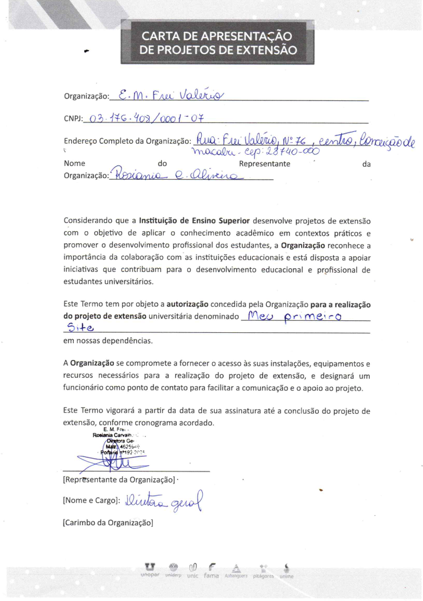

OFICINA DE DESIGN DE PRODUTO (UX/UI) E IA PARA ALUNOS DO ENSINO MÉDIO
Projeto de extensão de cunho social e tecnológico planejado para introduzir conceitos de Product Design (UX/UI) para alunos do 1º,2º e 3º ano do Ensino Médio de uma Escola Estadual, como parte integrante do curso de Engenharia de Software. A ação foi estruturada sob a metodologia PDCA e princípios de Design Thinking, simulando a atuação de uma startup real denominada X Desig Human
O workshop foi dividido em etapas cíclicas:
* Imersão e Empatia: Onde os alunos realizaram pesquisas e construíram Personas e Mapas de Empatia baseados em problemas reais da comunidade (como segurança, saúde e infraestrutura).
* Ideação: Utilização da técnica Crazy 8's e construção de Storyboards para visualização da solução e jornada do usuário.
* Prototipação: Desenvolvimento de Wireframes de baixa fidelidade (papel) e Mockups de alta fidelidade digital.
* Engenharia com IA: Fase final onde o Gemini atuou como engenheiro de software para transformar os protótipos em um MVP (Produto Mínimo Viável) funcional, demonstrando na prática a materialização de uma solução tecnológica.
1. Pontos Fortes do Projeto
Inovação Metodológica:O uso do Design Thinking aliado à Inteligência Artificial permitiu que alunos sem conhecimento prévio em programação vissem suas ideias transformadas em código funcional em tempo recorde
Desenvolvimento de Soft Skills:Além do aprendizado técnico, o projeto fomentou a criatividade, o planejamento, a organização e o aprendizado ativo entre os estudantes.
Foco em Equidade e Ética:A abordagem diferenciou conceitos de igualdade e equidade no design, além de alertar sobre Dark Patterns, formando cidadãos e futuros profissionais mais conscientes e éticos.
Resolutividade Social:As propostas atacaram dores reais da população local, conectando a academia diretamente às necessidades das instituições públicas e da comunidade.
2. Ferramentas e Tecnologias Utilizadas
* Metodologias de Design: Design Thinking, UX Research (Personas e Mapas de Empatia), Crazy 8's, Storyboarding e Jornada do Usuário..
* Prototipagem: Wireframes Low-fi e ferramentas de design digital (Mockups).
* Inteligência Artificial: Uso do Gemini para Engenharia de Prompt e geração de código MVP (HTML/CSS/JS).
* Gestão de Projeto: Framework PDCA (Plan, Do, Check, Act) alinhado aos Objetivos de Desenvolvimento Sustentável da ONU (ODS 4 e ODS 9).
3. Desenvolvimento de Habilidades e Competênciaso
A execução deste projeto de extensão foi um marco para a consolidação de competências técnicas e socioemocionais fundamentais para a atuação na Engenharia de Software. Ao assumir o papel de mediador e instrutor, pude aprimorar as seguintes áreas:
Domínio do Ciclo de Vida do Produto: Sem dúvidas, pude desenvolver de forma prática a capacidade de gerenciar um projeto ponta a ponta, desde a fase de Imersão e descoberta de problemas reais até a entrega de um MVP funcional.
Interação Homem-Computador (IHC): Através deste projeto pude aprofundar meus conhecimentos ao ensinar princípios de UX/UI Design, acessibilidade e equidade, validando padrões e boas práticas de interface que garantem a qualidade do software para o usuário final.
Engenharia de Prompt e IA: Neste projeto, desenvolvi habilidades avançadas em trabalhar com Inteligência Artificial (Gemini) como ferramenta de produtividade, aprendendo a estruturar briefings técnicos precisos para acelerar o desenvolvimento de soluções computacionais.
Alinhamento com Padrões de Mercado:O projeto reflete o uso de metodologias de ensino de UX Design modernas desenvolvidas pelo Google foco no usuário, visando formar designer criativos e conscientes.
Liderança e Soft Skills: O trabalho com turmas do ensino médio exigiu o refinamento da minha comunicação, criatividade e capacidade de simplificar conceitos complexos de lógica e estrutura de dados, competências vitais para a atuação em equipes multidisciplinares.
Visão Ética e Empreendedora: Fortaleci minha percepção sobre o impacto social da tecnologia, atuando de forma consciente e crítica para promover o empreendedorismo e a inovação comprometidos com a sustentabilidade e a ética profissional.
